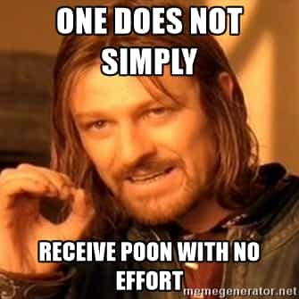

is an aspiring philosopher king, living the dream, travelling the world, hoarding FRNs and ignoring Americunts. He is a European at heart, lover of Latinas, and currently residing in the USA.


One of my best life lessons I learned in a Boy Scout wilderness survival class. I learned that the number one thing that keeps you alive if you are lost in the woods is a Positive Mental Attitude. Preventing yourself from becoming stressed, worried, depressed, or dejected and keeping a clear head is more important than finding water, carrying a compass, having a map, or any other single factor. And the best thing about that lesson is anyone can change their attitude.
I’ve found this lesson applies equally to success in life, success with women, and general happiness. Napoleon Hill and Dale Carnegie have both written books on the importance of P.M.A.
What is the biggest reason you are not getting laid more? You are not meeting, engaging, and flirting with enough women. Why not? It’s 100% a mental decision. If you approach women with a positive attitude, a smile, and carefree attitude, eventually you will get laid.
A positive attitude is important for two reasons. First, you must put yourself in the correct frame of mind to approach women in the first place. I’m fairly disgusted and exhausted by American women, their games, their personalities, and their general lack of femininity. If I stop and dwell on these issues too long, I lose the desire to approach them and miss out on the opportunity for a bang.
The other night, I was standing in a bar waiting for friends. There was a slim, long haired American girl also waiting alone. I’m fairly picky, and have had my fill of cunty, aggressive western women, and the pains of wasted time and past relationships with ex girlfriends were filling my mind. When I began thinking of all these things, and how inferior this chick would be vs. a slim Mexican salsa dancer, I hesitated before approaching, she looked over and saw me in my awkward state, and the opportunity was lost.
If you DO want an easy lay, you must set aside ALL negativity, and just have a goal of staying positive and upbeat no matter what, and to interact with every passable woman that you come across that day. I consider all the unpleasant components a Western girl may have just another part of her “shit test” that I must pass if I want to bang her. When you consider it that way, the correct response is to ignore it as irrelevant, and keep your goal in mind—getting her alone and sealing the deal.

The second reason a positive mental attitude is important is because once you have approached, you must project a confident, happy go lucky, masculine image to the woman with your actions, tone of voice, and conversation topic. Women have a naturally higher EQ than men, and can pick up on body language, nervousness, and other factors far easier than we can. You have to be naturally happy, and talking about subjects that are interesting to you or make you happy (at least on some superficial level), and you should be speaking with a smile.
In order to make them comfortable enough with us to hand over their contact info after only a few short minutes of conversation, you must come across as genuinely confident, happy, and carefree. This is very difficult to fake, so the easiest thing to do is make multiple approaches, so the individual outcome of each one matters very little. Then you have little reason to be nervous or feel odd, and your natural calm and confident manner will moisten her privates and make her more receptive. Remember, the first couple of minutes of casual flirting is an exciting event for both man and woman, and you want her emotions to tell her “Yes! See him again!” and overcome her rational mind (bear with me) which is saying “You don’t even know this stranger.”
What’s the main thing stopping you from approaching?
It’s far easier to do nothing
A masculine man takes on a difficult task, because it allows him to grow and learn. It’s easier to sit and home and watch TV instead of lifting. It’s easier to collect welfare than it is to learn a skill and work a job. It’s easier to wife up the first sloot you come across than remain single or hold out for the absolute best option. But we are men and we ENJOY challenges, because we enjoy the rewards that come with them.
You consider you will see the girl again
You might, and you might not. Either way, you should approach her, even if you aren’t going to close. Say hi, be friendly, make your presence known to her. You can always pick up where you left off if you see her again.
You hesitate and question how much you might like her
If you are looking for a quick bang, the only thing that should matter is if she passes the boner test. This can be decided within two seconds. Approach or pass.
You don’t feel physically attractive enough
First, remember the P.M.A. lesson. A positive mental attitude is WAY more sexy to a woman than a great body, a tall guy, or a certain “type.” Second, you should be working out in order to build and maintain strength, maintain healthy testosterone levels, and not be overweight. But trust me, if you are anywhere near average shape, the girl you want to approach has likely already slept with someone far below your SMV.
You aren’t dressed good enough to impress her
Again, attitude is more important than what you’re wearing. That said, I’m guilty of leaving the house without always looking my best. And it seems that EVERY time I do, I find myself around a really hot girl who’s alone. You know how the hot girl *always* has to spend time on her appearance, even if she’s only going to the grocery store? You need to do the same. It doesn’t have to be elaborate, just practice good hygiene and wear decent enough clothing where you feel comfortable approaching a stranger whenever you go out.
You don’t want the discomfort that comes with rejection
This is likely the biggest reason. Consider that meeting girls is simply a numbers game, and that you must pass x number of rejections until you reach the goal. Consider every interaction to be a learning experience. Therefore, when you don’t get the number, you haven’t failed, you’ve practiced another approach, you’ve gauged the girl’s reaction to your style, your opening line, a specific question, or something you can tweak and use on your next approach. Consider this: even if you fail 100% of the time, all you’ve done is spent a few minutes getting to know someone you will never see again. Psychologists tell us talking to strangers improves our well-being. So at a bare minimum, you’ve improved your mental and emotional health.
Approach first, hesitate after you number close
Accept that even for the best of PUAs, they will likely convert only single digit percentages of approaches into lays. This fact alone should make you feel better. If I told you, you were guaranteed pussy if you approached the next 100 women you saw, would you do it? Because that’s almost assuredly what will happen. Guys new to game often report a success rate of 1, 2, 3%. While some pros often say it’s not much higher than 6%. What’s the catch? The pros are simply APPROACHING more.
The key for me is to make casual conversation with anyone and everyone you come across. This does a few things:
1) Puts you in a Positive Mood! We are social creatures and we get tiny endorphin highs off social interactions.
2) Warms you up and gives you practice at making small talk
3) Takes the pressure off when you see a hot girl, you just repeat the same behavior you did with the last 5 strangers you passed, and she either responds, or doesn’t.
The school year is ending, couples are breaking up, bodies are getting beach ready, and juices are flowing. Now is the time to act. For the month of May, the challenge is to approach 100 women in 30 days. That means approaching 3 girls every day, 4 girls on weekends. Depending on your comfort level, if you’re not ready for something that aggressive, take 2 months. If you’re ready, start today. If you can’t dive right in, here is the plan:
Week 1: Begin your first couple of days approaching neighbors, fellow guys, old ladies, married women, etc. Just make small talk with them. If you feel weird starting a conversation with a stranger, just make a comment while passing like “Hey! Great day isn’t it?” Or “Good afternoon! I’m loving this great weather” Understand that reading this comes across as cheesy and dumb, but when you say it with a smile, it comes across as genuine and positive and friendly, which is the attitude you’re wanting to project.
The goal is really more how you say something and the fact that you are speaking at all, instead of what you say. Think of someone who always speaks to you. You probably think of them as a friendly and happy person, without remembering anything specific they say to you. By the end of this week you should be approaching at least one new girl a day.

Week 2: The goal is to develop a conversation. You aren’t merely saying “hi” but you are going for a back-and-forth. You need to develop some follow up questions. Day Bang is very helpful for some ideas here, and will cost you roughly two coffees at Starbucks. I’ll leave it up to you if you think that’s a worthwhile investment. Again, what you say is of less importance. Obviously saying something dumb or awkward can blow your chances, but most guys are too afraid to approach women at all, and most women will love the opportunity to talk about themselves. Make a compliment, comment about their clothing, their style, where they are going, what they are doing, etc. Approach and make conversation with at least one girl a day.
Post a note on your mirror and motivate yourself to keep approaching!
Week 3: At this point you should see that it’s easy to approach and talk to strangers, especially if you have no expectations for the outcome. The goal here is to ask for one phone number a day. At this point, you need to not really care about getting the number, just casually throw out “Well, hey, I have to run, but it was nice chatting, we should talk again some time, what’s your number?” At the same time don’t expect to get the number, because girls will read your anxiety and fear. It is work to go out and meet girls, so you don’t have to ask for a number every single day, but you should complete seven attempts within this week.

Week 4: The goal here is to collect as many digits as possible. Challenge yourself to approach three girls every day, at a minimum. At the end of this month, you should have over 35 approaches. Continue into month two with three approaches per day, and you’ll reach your goal of 100 at the end of this month.

You will have to work to meet 100 strange women. You may find yourself going to the mall, going to the park, the coffee shop, and places where you wouldn’t normally go. But at the end of this challenge I can GUARANTEE you will be more confident, have less fear of rejection, be more comfortable and relaxed around strange women, and will being to naturally act on opportunities that come your way, instead of letting them slide by.
And you statistically have enough approaches to have earned a bang. All you need is a Positive Mental Attitude. Do you have one?
Read More: 10 Reasons Why You Must Study Body Language